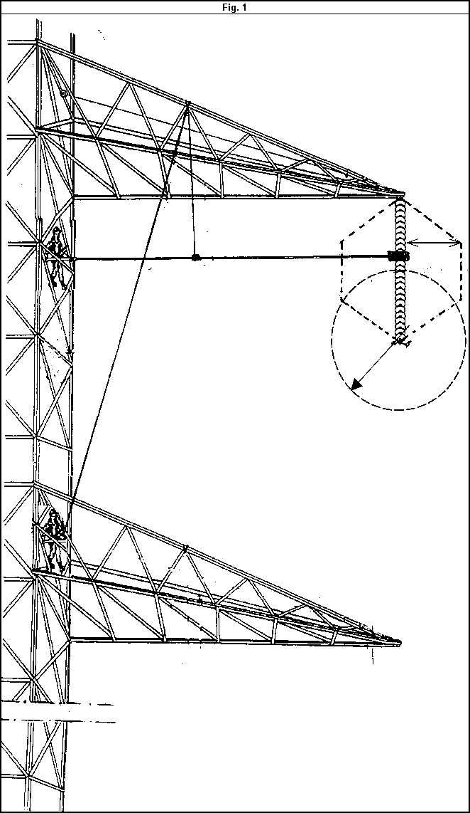
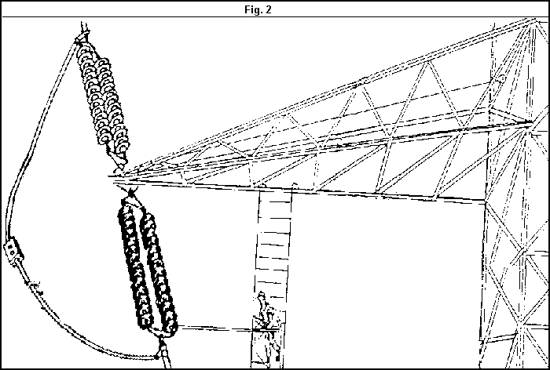
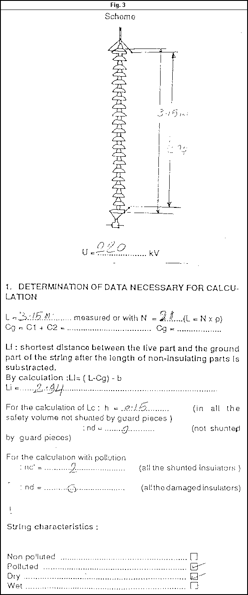
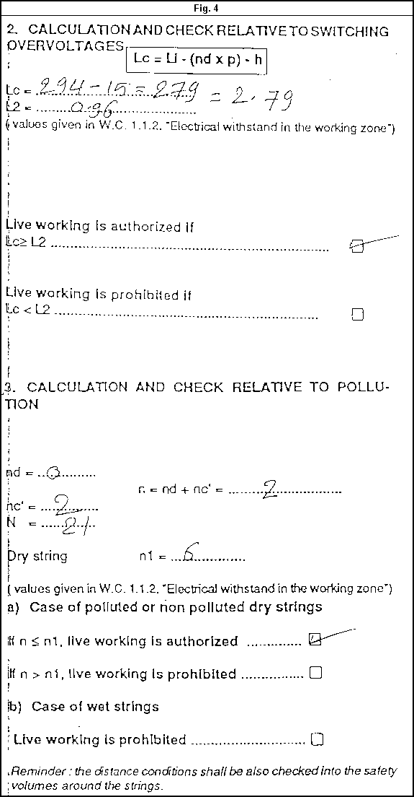
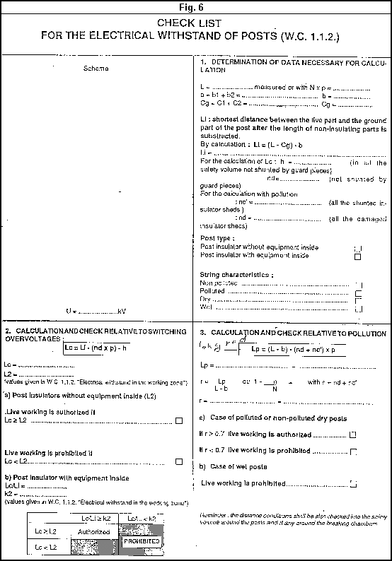

|
Transmission
Lines Technical Procedure |
Equipment:
Hot Dry Cleaning 220 KV Tension Tower Insulators Circuit Energized-Live Working |
Document Number: LI-TL-029- -r0 |
Issued To:
EHV Networks
General Network Inspector |
| Status:
1ST DRAFT |
Procedure:
French Method |
Date Approved:
|
Review Date:
|
Introduction
The purpose of this procedure is to provide detailed safe method for transmission lines maintenance staff to minimize the possibility of error causing personal injury or damage to equipment.
EEA TL engineers in head office and zones using their background field experience and EEA/EDF documentation to create this procedure.
Safety Precautions
Visually inspect all equipment (sticks ,ropes ,slings)
Inspect the insulation of insulating ropes using leakage surface tester.
Clean all poles by silicon cloth.
Be sure that all sticks have been tested and the date of last inspection not more than six months refer to the inspection certificate.
Earthing resistance for the line is in permissible value (black soil < 10 W
. , Rocky soil < 30 W
. , Sandy soil < 20W
..
Tools and Equipment
- Radio 1
- Rack 2
- Hammer 1
- Silicon cloth 2
- Surface Leakage tester + static inverter, tower saddle with adjustable clamp,conductor suport pole (j
64 mm) 3.9 meter length
- Big pulley 4
- Small Pulley 4
- Chain hoist 3
- Insulating Ladder 1
- Ladder sliding seat, Nylon sling 2
- Insulating ropes (90,80,100meter with Diameter 13.5mm and Resistance 200 Dyane.
- Gin 2.65m 1
- Extendible hand pole 6
- (3.08m)2.085chain block 3
- Double broom brush (for long rod insulator)
- Mechanical tester 1
- Climbing tools
- Stripes 2
- Measuring rod
- Universal hand pole 2
- General Condition :-
A) Distances :
Table of necessary distances (component and lineman) at 220 K.V
|
string and posts |
phase to earth |
|
c |
c+g |
t |
t+g |
|
|
0.70 |
1.2m |
1.1 |
1.6 |
|
C, c +g , t , t +g illustrate in fig.(1)
B) Special operating Mode (S.O.M)
-Automatic Reclosing unit on the line must be off.
-If the line switched off during the work, Not switched ON again before telling the work Supervisor to lower the worker to the land (to the ground)
Work to be Carried Out
Get live working authorization.
Check the radio link, check the line name and define the tower to be clear.
Park the car (not under conductor).
Put tarpaulin and define the hand line location.
Put Racks and bring out the material from the car.
Check collective and individual materials.
The first line man climbing the tower (by using safety rolls) and life line with fall arresting unit).
The other line man on the ground well be plan steel picket hand line installation)
Raise the measuring rod and check the distance on the cross-arm of the tower.
A second line man climb the tower to help the first.
Raise the tower saddle and adjustable saddle on the angle of cross-arm.
Raise the must with the pivot with 3 clevises .
Raise 3 chain hoist to support the must.
Install the must as shown in Figure (2).
Raise the hook ladder +insulating rope and install it as in figure.
Support the hook ladder by using 2 stripes.
Adjust the ladder in the Horizontal position parallel to strings.
Raise the ladder-sliding seat and put in on the ladder.
Raise the mechanical tester and checkout the string (porcelain strings).
Raise the insulating pole with double broom brush and begin to clean the string from cross arm to conductor for all phases.
In case of double circuit towers move all equipment to the second circuit.
Lowering all equipment to the ground and put them in the car.
Return the live working authorization.




